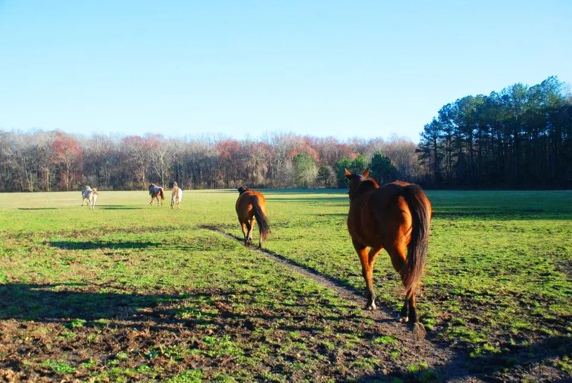

Adventure Trail Ride
A fun, adventurous trek through the farm's wildlife sanctuary, for riders who have had previous riding lessons.
- Instruction by CHA certified riding instructors
- Setup in the indoor arena
- Helmet and guided trail ride
Some restrictions apply; see "Before you ride" below.